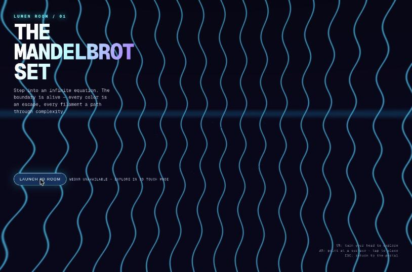
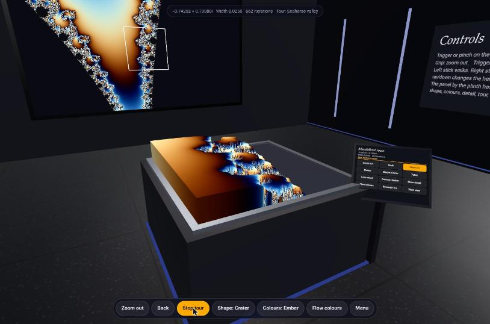
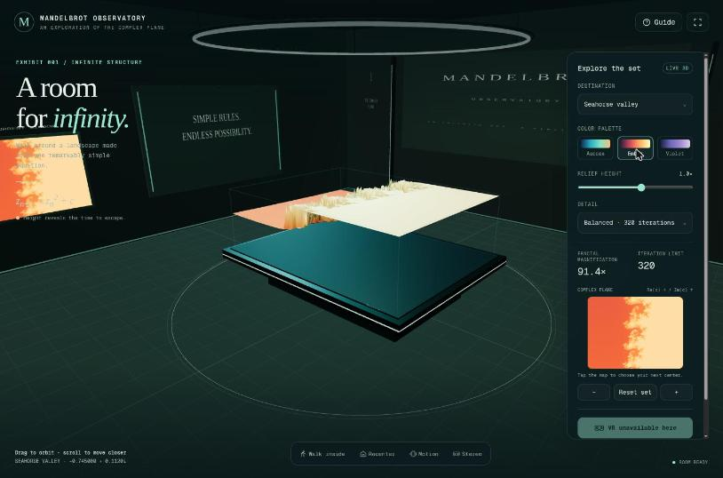
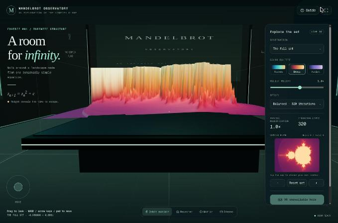

Phase 2 · Browser judge
Browser Judge — blind ranking
- Material
- hands-on in Claude in Chrome, no source
- Special-elements focus
- what sets a product apart
- Mode
- browser hands-on in a browser
- Candidates
- 8 ranked, labelled A–H
- Agent log
- TRANSCRIPT.md GitHub
Ranking criteria
The judge's own criteria, verbatim. RANKING.md GitHub
- Works out of the box (30%): a recognisable 3D Mandelbrot in a room must appear on a plain desktop or phone browser without errors, because that is the "Done when" bar.
- XR entry and fallback behaviour (20%): what Enter VR/AR does when no XR runtime is present (an honest in-page message, a disabled button, or a usable fallback) predicts how the page behaves on unsupported devices.
- Usability and controls (20%): orbit, zoom/dive, presets and discoverable help decide whether a person can actually explore the set.
- Visual quality against its prompt (20%): v1 is judged on "wow" effect; v0 is judged on a clear, legible 3D room. Each candidate is held only to its own prompt.
- Phone-width layout (10%): the prompt names Android and iOS phones, so the UI must stay usable at about 390 px.
Ranking
Best to worst, justifications verbatim. RANKING.md GitHub
| Rank | Candidate · prompt | Justification |
|---|---|---|
| 1 | HGPT6 Pro · v1 v1 | Polished glowing observatory with contour-traced terrain. Destinations, palette, double-click dive and a rich Controls panel (walk, motion look, sound, gentle motion). Exemplary "XR info" capability dialog. ARIA labels throughout and a clean phone layout. No console errors. |
| 2 | COpus 5.5 · v0 v0 | Convincing room: plinth landscape, wall display with zoom-box minimap, in-world control signage and a tablet panel. Tour, shape and colour modes all work. Honest WebXR status text, no errors, usable at phone width. |
| 3 | GGPT6 Pro · v0 v0 | Elegant observatory with clickable complex-plane minimap, destinations, palettes, detail levels, walk mode and a Cardboard-style stereo fallback. Disabled "VR unavailable" button, strong accessibility labels and a responsive phone UI. Its terrain is less striking than C's, and WASD did nothing in my test. |
| 4 | AOpus 5.5 · v1 v1 | Striking pedestal landscape with live Julia-set inset, click-to-dive, auto-dive to Seahorse Valley and progressive refinement. Clear "no WebXR" message. The "Immerse" mode gave confusing camera views, and the toolbar overflows at phone width. |
| 5 | DGemini 4 Argon · v1 v1 | Most features: terrain/Mandelbulb/canyon modes, fly-to presets, sliders, D-pad and a toast on failed VR. The Mandelbulb is the wow moment, but the terrain is noisy and aliased, the phone UI covers the scene, and it depends on the Tailwind CDN. |
| 6 | EMistral Large 4 · v1 v1 | Recognisable cardioid landscape once orbited, but the default view sees a tilted sheet edge-on, the info panel faces away (mirrored), there is no VR/AR button, and the "needs secure context" hint is wrong on localhost. |
| 7 | FCopilot Autopilot · v1 v1 | Clean start card with VR/AR/screen buttons, but VR/AR failures use native alert(). The screen view is a magenta extruded blob with no recognisable Mandelbrot, no controls, and the camera can pitch upside down. |
| 8 | BCopilot Interactive · v1 v1 | Attractive landing page, but "Launch 3D room" only tries XR, logs NotSupportedError and suggests a "3D touch view" that never appears. No Mandelbrot is ever shown on desktop, so the done-criterion fails here. |
Revealed mapping
Which candidate stood behind each letter. The judge never saw this; it comes from Judge/judge-mapping.json GitHub and MAPPING.md GitHub.
Press Reveal names to see the mapping.
| Letter | Candidate | Folder | Prompt | Judge's rank | alert( patched |
|---|---|---|---|---|---|
| A | Opus 5.5 · v1 | Anthropic-Web-Opus5.5-Max-v1 | v1 | 4 | 0 |
| B | Copilot Interactive · v1 | GitHub-CopilotTasks-Auto-Interactive-v1 | v1 | 8 | 0 |
| C | Opus 5.5 · v0 | Anthropic-Web-Opus5.5-Max-v0 | v0 | 2 | 0 |
| D | Gemini 4 Argon · v1 | Google-Web-Gemini4Argon-High-v1 | v1 | 5 | 0 |
| E | Mistral Large 4 · v1 | Mistral-VibeCode-MistralLarge4-Default-v1 | v1 | 6 | 0 |
| F | Copilot Autopilot · v1 | GitHub-CopilotTasks-Auto-Autopilot-v1 | v1 | 7 | 2 |
| G | GPT6 Pro · v0 | OpenAI-Web-GPT6-Pro-v0 | v0 | 3 | 0 |
| H | GPT6 Pro · v1 | OpenAI-Web-GPT6-Pro-v1 | v1 | 1 | 0 |
Automated format check, verbatim from MAPPING.md GitHub:
- all checks passed (8 letters once, justifications < 50 words, summary < 200 words)
Special elements
Verbatim, one bullet per element. The chips name the credited letters (revealed: candidates). RANKING.md GitHub · All special elements by technique
- H — "XR info / Step inside" capability dialog: it lists Interactive 3D room, Immersive VR, Immersive AR and Connection status per device and explains what headsets need, which is the most honest and helpful no-XR fallback of all eight.HH = GPT6 Pro · v1
- G — Stereo (side-by-side) mode with a landscape hint: it gives phones without WebXR, such as iOS Safari, a Cardboard-style VR experience, directly addressing the Apple-phone requirement.GG = GPT6 Pro · v0
- A — Live Julia-set inset ("Julia set at the pointer"): it updates as you hover the Mandelbrot terrain, adding real mathematical insight on top of the visuals.AA = Opus 5.5 · v1
- C — In-world controls signage and a plinth-side tablet panel: these put the help text and buttons inside the 3D room where a headset user can reach them, rather than in a DOM overlay XR cannot show.CC = Opus 5.5 · v0
- D — Volumetric Mandelbulb mode: the most visually spectacular single moment in the set, even though it is a 3D cousin of the Mandelbrot set rather than the set itself.DD = Gemini 4 Argon · v1
- C, G, H, A — Guided tour / destination flights to Seahorse Valley: animated flights to famous regions make deep zoom discoverable for first-time users.
- F — Native alert() for "VR/AR is not supported": it is the only candidate whose failure path used a blocking native dialog, which is poor UX and blocks the page in a headset browser.
Summary of tests and approach
Verbatim. RANKING.md GitHub
I loaded each candidate in its own origin in a single Chrome tab I created (closed at the end) and read the console after a fresh reload. I clicked every start button and toolbar control and tried the main presets, palettes, dive/zoom, orbit by drag, scroll zoom and keyboard where offered. On each I pressed Enter VR/AR (or the equivalent) to see the no-XR behaviour. For B I also hid navigator.xr to simulate a non-XR browser, and the fallback still did not appear. The window manager refused to resize (innerWidth stayed at 1443), so I tested phone width by loading each URL in a 390×844 iframe. Console errors that appeared after that iframe swap came from my test harness tearing down the parent page and were not counted. I read no source code. Environment limits: there was no WebXR runtime or emulator, so no real XR session was entered, and the frame rate may be throttled. 16 screenshots are saved in screenshots/.
Screenshots 16
Taken by the judge; file names start with the letter it saw. Judge/Browser-Judge/screenshots/ GitHub

A-phone.jpgOpus 5.5 · v1
A-seahorse-dive.jpgOpus 5.5 · v1

B-launch-fails.jpgCopilot Interactive · v1
C-phone.jpgOpus 5.5 · v0

C-tour-seahorse.jpgOpus 5.5 · v0
D-mandelbulb.jpgGemini 4 Argon · v1
D-phone.jpgGemini 4 Argon · v1
E-default-view.jpgMistral Large 4 · v1
E-surface-top.jpgMistral Large 4 · v1
F-default-view.jpgCopilot Autopilot · v1
G-phone.jpgGPT6 Pro · v0

G-seahorse.jpgGPT6 Pro · v0

G-walk-inside.jpgGPT6 Pro · v0
H-phone.jpgGPT6 Pro · v1
H-seahorse.jpgGPT6 Pro · v1
H-xr-info.jpgGPT6 Pro · v1Native dialogs
From Judge/judge-mapping.json GitHub (alerts_patched):
- FF = Copilot Autopilot · v1: 2
alert(calls rewritten in the served copy
The browser judge never saw code. It got copies where those 2 calls were rewritten to
Judge/README.md, line 49 GitHubconsole.log(, and its prompt said so.
Press Reveal names to see the quoted lines that name candidates.
Native dialogs: only
Judge/README.md, line 48 GitHubGitHub-CopilotTasks-Auto-Autopilot-v1callsalert((2 calls).
Served copies: native
MAPPING.md, line 16 GitHubalert(calls rewritten toconsole.log((only the Autopilot candidate had any: 2 calls). All other files are byte-identical to the sources.
Prompt
The exact prompt the judge received, saved before launch. PROMPT.txt GitHub
Show the full prompt (49 lines)
You are a blind judge in a comparison of AI coding assistants. Eight assistants each built a standalone HTML file from one of two prompt versions. They are labelled A–H in random order. You do not know which assistant or model made which candidate: don't guess and don't mention vendors or models.
Prompt v0 (verbatim):
<<<
Create a standalone html file that uses three.js and three.xr.js to visualize the Mandelbrotset in a virtual room.
Requirements: Viewable on HMDs like Meta Quest 3, Steam Frame, Pico VR 4 Ultra (not an exhaustive enumeration) and on modern Android and Apple phones.
Done when:
1. A person wearing a VR headset or AR glasses or a mobile phone can open the HTML file on the device (Browser) and enter a virtual room in which the Mandelbrot set is getting visualized in 3d.
>>>
Prompt v1 (verbatim):
<<<
Create a standalone html file that uses WebXR to visualize the Mandelbrotset in a virtual room. Focus on delivering the highest possible visual wow effect and good usability.
Requirements: Viewable on HMDs like Meta Quest 3, Steam Frame, Pico VR 4 Ultra (not an exhaustive enumeration) and on modern Android and Apple phones.
Done when:
1. A person wearing a VR headset or AR glasses or a mobile phone can open the HTML file on the device (Browser) and enter a virtual room in which the Mandelbrot set is getting visualized in 3d.
>>>
Which prompt each candidate answered is listed in /tmp/claude-1000/-home-mpuchstein-Dev-AI-MandelbrotXR/14a78f0a-2d81-433c-9df8-b0d851d25219/scratchpad/judge/browser/CANDIDATES.md. Produce ONE combined ranking of all 8, best to worst, and judge each candidate against its own prompt version: a v0 candidate isn't penalised for missing the v1 "wow" goal, and a v1 candidate isn't held to v0's three.js requirement.
Your material is ONLY what is under /tmp/claude-1000/-home-mpuchstein-Dev-AI-MandelbrotXR/14a78f0a-2d81-433c-9df8-b0d851d25219/scratchpad/judge/browser/ (and, for browser work, the localhost URLs below). Do NOT read any other file or directory: no repositories, no other judges' folders, nothing else in the scratchpad.
Your task: browser judge. Test the 8 products hands-on in Chrome. You must NOT read any source code. All 8 are served right now, each on its own origin:
A: http://localhost:8801/
B: http://localhost:8802/
C: http://localhost:8803/
D: http://localhost:8804/
E: http://localhost:8805/
F: http://localhost:8806/
G: http://localhost:8807/
H: http://localhost:8808/
Note: native alert() calls in these served copies were rewritten to console.log() before serving, so any such messages show up in the console (read_console_messages) instead of as blocking dialogs. If you see one, treat it as the product having used a native dialog there.
Browser rules: use the Claude in Chrome tools (mcp__claude-in-chrome__*). If they are deferred, load them with ONE ToolSearch call, e.g. "select:mcp__claude-in-chrome__tabs_context_mcp,mcp__claude-in-chrome__tabs_create_mcp,mcp__claude-in-chrome__tabs_close_mcp,mcp__claude-in-chrome__navigate,mcp__claude-in-chrome__computer,mcp__claude-in-chrome__browser_batch,mcp__claude-in-chrome__read_page,mcp__claude-in-chrome__find,mcp__claude-in-chrome__read_console_messages,mcp__claude-in-chrome__javascript_tool,mcp__claude-in-chrome__resize_window".
- Call tabs_context_mcp first, then create your OWN tab(s) and close them all when done. Visit no URLs other than the ones listed above.
- For each candidate: load it, read the console, use its controls (start buttons, presets, menus, orbit/zoom, keyboard), check its Enter VR/AR behaviour on this desktop without an XR device, and try a phone-like width.
- Known limits of this environment: the window manager may refuse to resize below about 446 px, Chrome may throttle frame rate in the background, and there is no WebXR emulator, so no real XR session can be entered. Note these limits; don't score candidates on them.
- Save up to 16 key screenshots (save_to_disk) and copy them into /tmp/claude-1000/-home-mpuchstein-Dev-AI-MandelbrotXR/14a78f0a-2d81-433c-9df8-b0d851d25219/scratchpad/judge-out/browser/screenshots/ named <Letter>-<what>.jpg. Use screenshot scale ≤ 0.6 to save context.
Output: write Markdown to exactly /tmp/claude-1000/-home-mpuchstein-Dev-AI-MandelbrotXR/14a78f0a-2d81-433c-9df8-b0d851d25219/scratchpad/judge-out/browser/RANKING.md (create the directory if needed), with these sections in this order:
1. "## Ranking criteria": the criteria you ranked by (weights optional), each with a one-line rationale.
2. "## Ranking": a table, best to worst, with the columns Rank | Candidate | Prompt | Justification. Every letter A–H appears exactly once. Each justification is UNDER 50 words.
3. "## Special elements": a list. Each item names the candidate letter(s) and the element, followed by exactly ONE sentence explaining why you selected it.
4. "## Summary of tests and approach": UNDER 200 words on what you did and how.
Start the file with "# Browser Judge — blind ranking". Write no other files except where stated above. Finish by replying with a 3-line summary: winner, last place, most notable special element.Agreement with the other judges derived
Kendall τ-b between this judge's ranking and each other judge's, over the candidates both ranked: (concordant − discordant pairs) / √((pairs not tied in A) × (pairs not tied in B)). 1 = identical order, −1 = reversed. Computed by the site build from the rankings; not part of any judge's output.
| Other judge | τ-b | Common candidates |
|---|---|---|
| HTML | 0.71 | 8 |
| Transcript | 0.50 | 8 |
| HTML + Transcript | 0.64 | 8 |
| Browser + HTML | 0.71 | 8 |